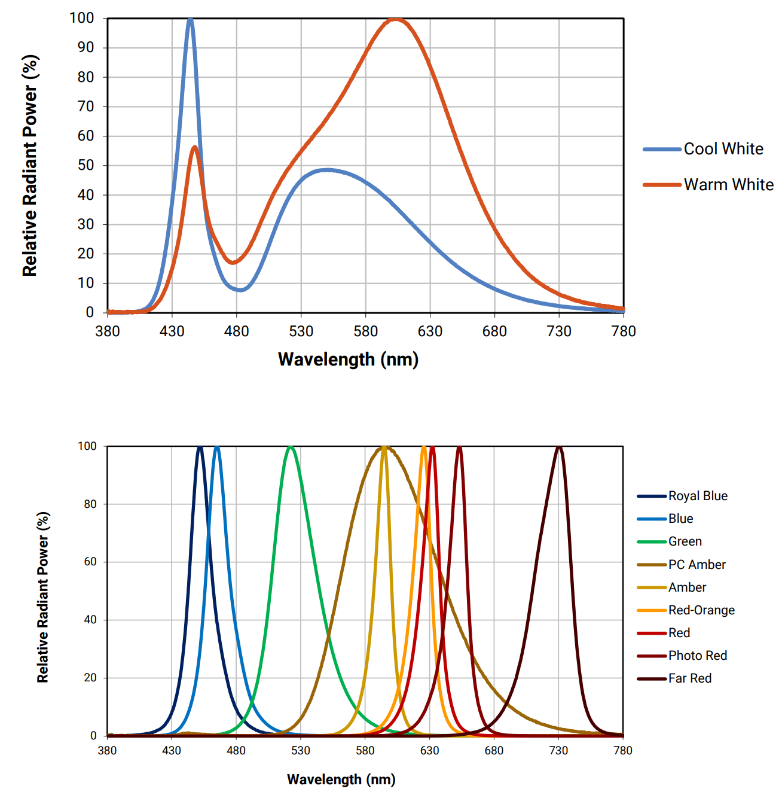
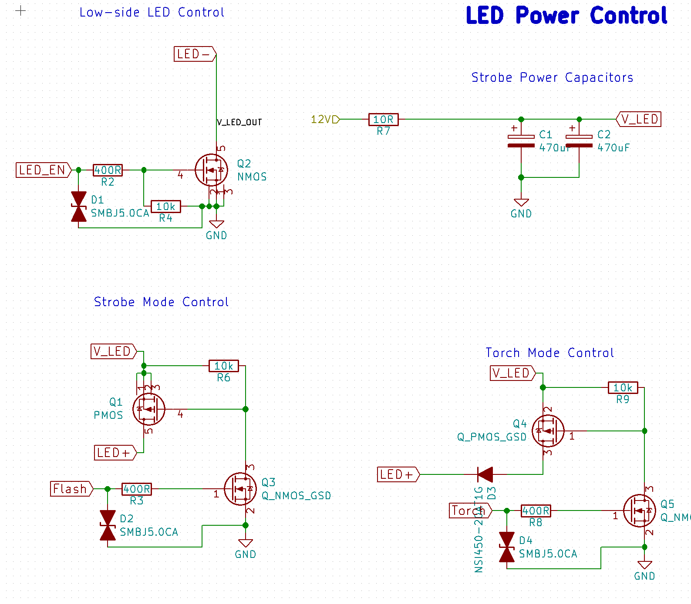
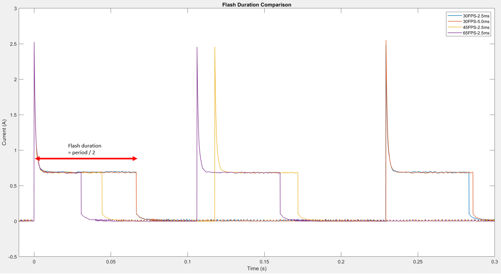
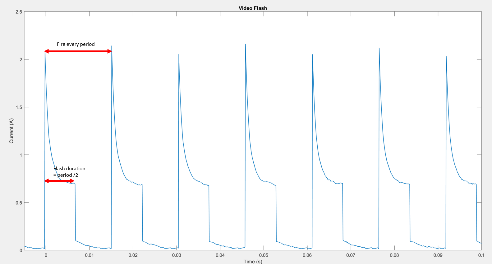

Imaging
Illumination

IPAX uses ten CREE XPE2 LEDs for illumination. There are two main colors used for deployment, far red and white. Please consult the official datasheet linked below for full detail of the LEDs. The spectrum plots of XPE2 from the datasheet is shown here as a reference.
In addition to the LEDs, IPAX also uses secondary optics to focus light from the LEDs. The optics used here is Carclo 10.0mm Narrow Spot Lens (P/N 10412)
CREE XPE2 Datasheet Carclo Lens Datasheet
LED Driver Circuit
The LED driver circuit is a part of the power control board. The schematic of the driver is shown below.
There are two modes for illumination: (1) torch mode and (2) flash mode. Torch mode is simple control where the LEDs are always on or off without duty cycle. In this mode, the LEDs are driven by a constant current source diode (D3: NS1450 in this case). The LEDs stay pretty dim in this mode, so the board does not get overheat or consume too much power.
Flash mode is controlled by the triggering signal from IMX219. Once the trigger signal is high, the LEDs rapidly draw power from two large alumninum electrolytic capacitors (C1 and C2) to generate light. These capacitors help supply burst of current withouth straining the batteries and also generating more illumination in short period of time. Note that the Flash trigger should not be left ON for a prolonged period of time as it essentially shorts the LEDs drawing a lot of power and producing a lot of heat.
LED Temperature
The PCB for the LED has aluminum substrate to help dissipate heat from each LED to the surrounding. The test shows that the temperature of the LED board is slightly elevated but is never high enough to cause trouble. The IPAX has a capability of adding an additional fan to help dissipate heat if the heat from the LEDs becomes a problem.

Pi Camera Flash
The RPi camera comes with an unconventional way of trigerring. It does not accept external hardware triggering, but it does output a trigerring signal for external flash. The method is outlined very well in the official documentaiton. The setup can be done very easily by following the steps in the documentation. To make things easier, here is the dts-blob.bin files for IPAX. dt-blob.bin
Flash Trigger Overview
The Pi camera sensor does not actually send out a trigger for external flash hardware. However, it sends out signal of when a frame capture begins and ends. For more detail, please visit the official documentaiton, especially, see Misconception #2. As a result, the flash trigger from the Pi camera is always at the start and end of the frame acquisition, resulting in a constant flash duration of fps/2. The brightness of the image is then controlled by the actual exposure time of the camera instead of the flash duration (unlike other microscopes controlled by Nvidia Jetson).
Here is the test of flash duration with different exposure time and fps setting. It can be seen that the exposure time of the camera does not affect the flash duration, but the fps setting does.
Still Capture Flash
The flash mode is set by the parameter disable_camera_led in /boot/config.txt. Please consult this forum for the full description of values.
For still picture capturing, we use disable_camera_led=1, and then set camera.flash_mode = 'on' in the python implementation.
Using this flash mode, the camera will only flash twice for a single image acquisition. One before the actual acquisition and one during the acquisition. See the previous plot for detail.
Video Flash
The flash mode for still images does not work on video capturing. The flash will simply not turn on at all when the camera is streaming the video. As a result, we need to work around this by setting disable_camera_led=3. With this setting, the flash is triggered every frame.
However, we cannot turn the flash off by this trigger alone when the camera is on. As a result, we need to add another flash controller. In IPAX, the flash trigger from the sensor control the high side of the LEDs, and another GPIO pin is used to control the low side of the LED to help conserve energy.
